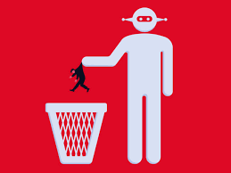

This part of the website will show you how AI can be misued, and what affects occur from that!
AI misuse is something that isn't good and can give bad side effects. AI misuse is when somebody uses AI incorrectly. This incorrectly could be using AI at the wrong time. For example, a student might be copy-pasting work from an LLM, to their work in school. There are many more ways AI can be misused other than copy-pasting. Some other ways AI can be misused are using AI all of the time, not even asking for sources or reading sources, or not even saying if you had used AI for your work. Doing some of these things like using AI all the time can result in bad side effects. Some of these side effects could be losing critical thinking, losing marks in class, or losing your job. For example, somebody working at their job might be using AI. If they get caught, they might lose their job since they weren't thinking, but an AI was. All of these effects might seem scary, but you can prevent yourself from misuing AI by doing the following things. You can follow the rules about AI in your workplace, ask the LLM for sources if you ask it for any information, make sure to use AI at the right time, and try to do any work you think you might need AI for, yourself. Misusing AI is bad and can have worse side effects, but you can still stop yourself from misusing it.
In the year 2026, people are relying more and more on AI, and misusing it. I believe this because whenever I see people doing work, sometimes people use AI for a bunch of things at the wrong time. Some people just just rely on AI, and don't understand the side effects. Another thing is that people nowadays have less critical thinking skills, and more skills at using AI. People get habits of using AI, and have their critical thinking skills drop, because they arent thinking that much themselves. An example of people relying on AI a lot is somebody using AI in class for their work instead of doing the work themselves. That person might get lower grades since they could get caught using AI, and not using their own mind to do their work. Another thing that could happen is that they continue to rely on AI, make it a habit, and lose their critical thinking skills. Today, people are misusing AI and suffering the bad side effects from misuse.
